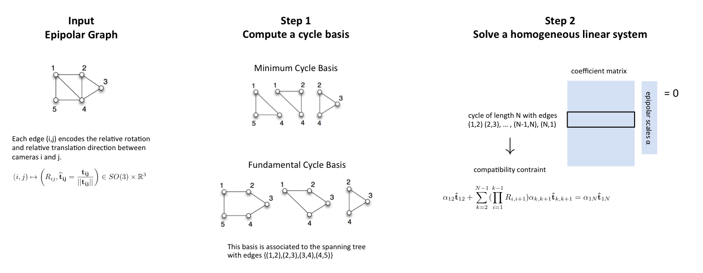

F. Arrigoni, A. Fusiello, B. Rossi
In this paper we deal with the Epipolar Scales Computation (ESC) problem, namely the problem of recovering (up to a global scale factor) the unknown norms - also referred to as Epipolar Scales - of the relative translation directions extracted from the essential matrices. In fact, only the translation directions can be computed from the epipolar geometries, but not their norms, owing to the well-known depth-speed ambiguity. The problem can be usefully modeled by considering the Epipolar Graph, where nodes are the images and edges correspond to epipolar relationships between them.
In this paper we provide theoretical conditions that guarantee solvability of the ESC problem, and we propose a two-stage method to solve it. First, a cycle basis for the epipolar graph is computed, then all the scaling factors are recovered simultaneously by solving a homogeneous linear system. The key observation is that the compatibility constraints associated to cycles can be seen as equations in the unknown scales. Thus the ESC problem is cast to the resolution of a single linear system, and solvability depends on the algebraic properties of the coefficient matrix.
We consider two variants of our method, which differ for the algorithm used to obtain a cycle basis, namely computing a Fundamental Cycle Basis (FCB) or a Minimum Cycle Basis (MCB). Experiments on synthetic and real data show that they both recover the epipolar scales accurately, and the lowest errors are obtained when using a MCB. Moreover, a MCB can be made resilient to outliers, which pays back for its higher computational cost.
